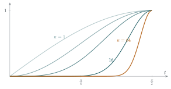

STEP II 1995, Question 4
Read the question before you go on. It is in the STEP Support Programme’s question database: step.maths.org/questions/95-s2-q4
The hook
What is \(\left(\frac12\right)!\)? The question sounds like nonsense: \(n!\) means \(1 \times 2 \times \cdots \times n\), and you cannot multiply “half a number” of terms. Yet there is a natural answer, and it is \[\left(\tfrac12\right)! = \frac{\sqrt\pi}{2}.\] Where does \(\pi\) come from? From integrals of powers of \(\sin t\), which this question studies. Along the way it proves one of the oldest and strangest formulas for \(\pi\), John Wallis’s infinite product of 1655, \[\frac\pi2 = \frac21 \cdot \frac23 \cdot \frac43 \cdot \frac45 \cdot \frac65 \cdot \frac67 \cdots,\] and it finds the hidden constant in Stirling’s formula for \(n!\), which every probabilist and statistician uses.
Before you start
What are \(u_0\) and \(u_1\)? And roughly what does the graph of \(\sin^n t\) look like on \([0, \frac\pi2]\) when \(n\) is large?
\(u_0 = \int_0^{\pi/2} 1\,\mathrm{d}t = \frac\pi2\) and \(u_1 = \int_0^{\pi/2}\sin t\,\mathrm{d}t = 1\). For large \(n\), \(\sin^n t\) is tiny except near \(t = \frac\pi2\), where \(\sin t\) is close to \(1\): the graph becomes a narrow spike against the right-hand edge (Figure 4.4.1). So \(u_n\) shrinks as \(n\) grows. The question finds exactly how fast: like \(\sqrt{\pi/(2n)}\).
Working it through
Stage 1 A reduction formula
Integrate \(\int \sin t \cdot \sin^{n-1}t\,\mathrm{d}t\) by parts, integrating \(\sin t\) and differentiating \(\sin^{n-1}t\). The new integrand contains \(\cos^2 t\); how can you get back to powers of \(\sin t\)?
With \(\mathrm{d}v = \sin t\,\mathrm{d}t\) (so \(v = -\cos t\)) and \(w = \sin^{n-1}t\) (so \(w' = (n-1)\sin^{n-2}t\cos t\)), \[u_n = \Bigl[-\cos t\sin^{n-1}t\Bigr]_0^{\pi/2} + (n-1)\int_0^{\pi/2}\sin^{n-2}t\cos^2 t\,\mathrm{d}t.\] The boundary term is zero for \(n \geq 2\). Writing \(\cos^2 t = 1 - \sin^2 t\), the integral is \(u_{n-2} - u_n\), so \(u_n = (n-1)(u_{n-2} - u_n)\), that is, \[nu_n = (n-1)u_{n-2}. \qed\] Multiplying both sides by \(u_{n-1}\) gives \(nu_nu_{n-1} = (n-1)u_{n-1}u_{n-2}\).■
Stage 2 An invariant
The relation says the quantity \(nu_nu_{n-1}\) does not change when \(n\) goes down by one. What is it equal to at \(n = 1\)?
By repeated use, \(nu_nu_{n-1} = (n-1)u_{n-1}u_{n-2} = \cdots = 1 \cdot u_1u_0 = 1 \cdot 1 \cdot \frac\pi2\). So \(nu_nu_{n-1} = \frac12\pi\) for all \(n \geq 1\).■
Stage 3 A squeeze
For \(0 < t < \frac\pi2\) we have \(0 < \sin t < 1\), so \(\sin^n t < \sin^{n-1}t\): the graph of \(\sin^n t\) lies below that of \(\sin^{n-1}t\) except at the endpoints. Integrating, \(0 < u_n < u_{n-1}\).
Use \(u_n < u_{n-1}\) and \(nu_nu_{n-1} = \frac12\pi\) to trap \(nu_n^2\).
Replacing \(u_{n-1}\) by the smaller \(u_n\) gives \(nu_n^2 < nu_nu_{n-1} = \frac12\pi\). Replacing \(u_n\) by the larger \(u_{n-1}\) gives \(\frac12\pi = nu_nu_{n-1} < nu_{n-1}^2\). So \(nu_n^2 < \frac12\pi < nu_{n-1}^2\).■
Applying the right-hand inequality with \(n + 1\) in place of \(n\): \(\frac12\pi < (n+1)u_n^2\), so \(nu_n^2 > \frac{n}{n+1}\cdot\frac12\pi\). Together, \[\left(\frac{n}{n+1}\right)\tfrac12\pi < nu_n^2 < \tfrac12\pi. \qed\] Since \(\frac{n}{n+1} \to 1\), the squeeze gives \(nu_n^2 \to \frac12\pi\).■

Looking back
Reduction formulae. Integration by parts turned \(u_n\) into \(u_{n-2}\), so all the \(u_n\) are determined by \(u_0\) and \(u_1\).
Look for an invariant. The product \(nu_nu_{n-1}\) stayed fixed, just as the integral did under the AGM step in Section 2.6.
Monotonicity plus an invariant gives a squeeze. Knowing \(u_n < u_{n-1}\) and the exact value of \(nu_nu_{n-1}\) trapped \(nu_n^2\) between two quantities with the same limit.
What’s really going on
Running the reduction formula down to \(u_0\) or \(u_1\) gives explicit values: \[u_{2m} = \frac{1 \cdot 3 \cdot 5 \cdots (2m-1)}{2 \cdot 4 \cdot 6 \cdots 2m}\cdot\frac\pi2, \qquad u_{2m+1} = \frac{2 \cdot 4 \cdot 6 \cdots 2m}{3 \cdot 5 \cdot 7 \cdots (2m+1)}.\] The squeeze shows \(u_{2m}/u_{2m+1} \to 1\). Writing out that ratio and rearranging gives Wallis’s product, \[\frac\pi2 = \lim_{m \to \infty} \frac{2 \cdot 2}{1 \cdot 3}\cdot\frac{4 \cdot 4}{3 \cdot 5}\cdots\frac{2m \cdot 2m}{(2m-1)(2m+1)}.\] John Wallis found it in 1655 by a daring process of interpolation, guessing what \(\int_0^1 (1 - x^2)^{1/2}\,\mathrm{d}x\) “should” be by fitting it into a table of integrals with whole-number exponents. It was one of the first infinite products in mathematics, after Viète’s (Section 2.5), and the first to use only rational numbers.
The factorial of a half
Wallis’s interpolation idea was made precise by Euler in 1729. He found a function, now called the Gamma function, \[\Gamma(s) = \int_0^\infty t^{s-1}e^{-t}\,\mathrm{d}t,\] which satisfies \(\Gamma(s + 1) = s\,\Gamma(s)\) (integrate by parts) and \(\Gamma(n + 1) = n!\) for whole numbers \(n\). It extends the factorial smoothly to all positive real numbers. The closely related Beta function \[\mathrm{B}(p, q) = \int_0^1 x^{p-1}(1-x)^{q-1}\,\mathrm{d}x = \frac{\Gamma(p)\Gamma(q)}{\Gamma(p+q)}\] includes the integrals of Section 4.3 and Section 2.9, and, after the substitution \(x = \sin^2 t\), our \(u_n\). In particular, \(\int_0^1 x^{1/2}(1-x)^{1/2}\,\mathrm{d}x = \frac\pi8\) (exercise 2), which gives \(\Gamma(\frac32)^2/\Gamma(3) = \frac\pi8\), that is, \(\left(\frac12\right)! = \Gamma(\frac32) = \frac{\sqrt\pi}{2}\). Equivalently, \(\Gamma(\frac12) = \sqrt\pi\), which is the same fact as the famous Gaussian integral \(\int_{-\infty}^\infty e^{-x^2}\,\mathrm{d}x = \sqrt\pi\), the reason \(\pi\) appears in the formula for the normal distribution.
Stirling’s formula
Stirling’s formula says \(n! \approx \sqrt{2\pi n}\,(n/e)^n\). The \((n/e)^n\) part is relatively easy to obtain, but the constant \(\sqrt{2\pi}\) is harder, and the standard way to find it is exactly this question: the explicit values of \(u_{2m}\) involve \((2m)!/(m!)^2\), and the limit \(nu_n^2 \to \frac\pi2\) pins down the constant. A completely different route to the same constant, through probability, is in Section 12.23.
The thinking skill
Integration by parts often relates an integral with parameter \(n\) to the same integral with a smaller parameter. That recurrence can then be solved, or analysed for its behaviour as \(n \to \infty\).
Watch for quantities that the recurrence leaves unchanged, and for monotonicity in \(n\); together they often give limits without any explicit formula.
Try this next
Wallis’s product. Using the explicit values of \(u_{2m}\) and \(u_{2m+1}\), and \(u_{2m+1} < u_{2m} < u_{2m-1}\), prove Wallis’s product.
A Beta integral. Try STEP II 2013, Question 2. It evaluates \(\int_0^1 x^n(1-x)^n\,\mathrm{d}x\) with a reduction formula, then asks what the answer suggests when \(n = \frac12\): a first glimpse of the factorial of a half.
The Beta function. Try STEP III 2025, Question 1 (in OCR’s download of the 2025 papers, a zip file). It develops the general Beta integral \(\int_0^1 x^{p-1}(1-x)^{q-1}\,\mathrm{d}x\), its symmetry and a recurrence, and uses them to evaluate an integral over \([0, \infty)\).
Central binomial coefficients. harder Show that \(u_{2m} = \binom{2m}{m}\dfrac{\pi}{2^{2m+1}}\), and use \(nu_n^2 \to \frac\pi2\) to deduce that \(\binom{2m}{m} \approx \dfrac{4^m}{\sqrt{\pi m}}\) for large \(m\). Check this for \(m = 10\).
Further reading
Julian Havil, Gamma (Princeton University Press). Includes the Gamma function and its history.
Philip J. Davis, “Leonhard Euler’s integral: a historical profile of the Gamma function”, American Mathematical Monthly 66 (1959). A classic, prize-winning article, readable with this section behind you.
Emil Artin, The Gamma Function (Dover). A short, beautiful monograph for when you have done some analysis.